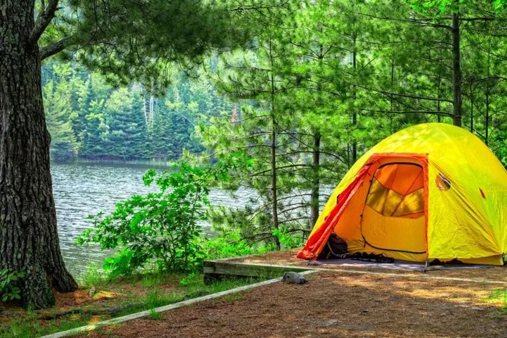

Hobilerim
-
Kodlama
Okuduğum bölüm gereği zamanımın çoğunu kodlama yapmaya ayırırım, bu da benim en sevdiğim aktivitedir.
-

Gitar Çalmak
Pandeminin bana kattığı tek güzel şey gitar çalabilmek ama ne yazıkki sesim biraz kötüdür:(
-

Kamp Yapmak
Bana göre kamp yapmak doğayla iç içe olmak ve huzurlu bir ortam için en iyi aktivitedir.